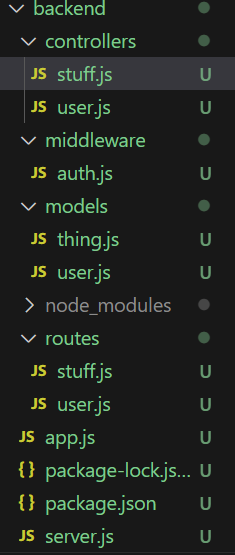

Faire les backs : partie 2
- MON
- 2023-2024
- temps 2
- Nicolas Ouzoulias
Un MON pour découvrir le back d'un site web : partie 2
Objectifs
Au cours du temps 2 j'ai souhaité me familiariser avec la structure Back-end d'un site internet. Mon premier MON aura tout d'abord été de me mettre à niveau en JavaScript et de découvrir quelques notions théoriques.
Mon second MON sera donc une manière de rentrer encore plus en détail dans ces notions et de les expérimenter.
Pour cela j'ai suivi différents cours en ligne (les liens sont dans les sources en bas de la page).
Définition
Le back-end représente tout le code s'occupant de la partie invisible d'un site internet, c'est-à-dire les aspects serveur, gestion de données ou encore la sécurité.
Il existe différents manière de coder le back, de mon côté je vais utiliser Node.js, Express et MongoDB qui sont assez simples à prendre en main.
Le langage utilisé est JavaScript que j'ai découvert et appris avec mon MON 2.1 .
Fonctionnement
Le lien entre l'utilisateur et le serveur se fait grâce à une API (Application Programming Interface) qui va nous permettre de jouer avec les données sur plusieurs critères :
- Create : création de la donnée
- Read : lecture de la donnée
- Update : mise à jour de la donnée
- Delete : suppression de la donnée
Ce qui donne l'acronyme CRUD en anglais.
Pour faire les modifications précédentes on utilise les méthodes suivantes :
POST: pour créerGET: pour lirePUT: pour mettre à jourDELETE: pour supprimer
Création d'un serveur
Tout d'abord il faut bien ranger nos lignes de code dans deux dossiers différents : un pour le front et un pour le back. Les deux dossiers seront exécutés en parallèle pour visualiser le résultat.
Afin de mettre en place notre premier serveur nous avons besoin de la ligne de code suivante qui va nous permettre d'importer le package http :
const http = require('http'); La création de notre serveur se fait ensuite comme ceci :
const app = http.createServer((request, response) => {
response.end('Hello World')
})Les mots request et response sont souvent raccourcis en req et res
La visualisation des résultats de nos lignes de code peut se faire en démarrant notre serveur ainsi que notre front-end en parallèle. Cependant avec Node.js on est contraints de redémarrer le serveur à chaque modification pour observer les changements.
Pour contrer cela on peut utiliser nodemon et la commande nodemon server qui redémarre le serveur automatiquement à chaque mise à jour.
Express
Express est un framework de Node.js conçu pour construire des applications en facilitant la gestion des routes et des échanges avec le serveur. Comme pour la création du serveur il nous faut un fichier app.js possédant les lignes :
const express = require('express');
const app = express();
..
module.exports = app;Notre serveur doit être lié à notre application grâce à ces quelques lignes que nous rajoutons dans le fichier server.js :
const app = require('./app');
app.set('port', process.env.PORT || 3000);
const server = http.createServer(app);
server.listen(process.env.PORT || 3000);La première ligne permet d'importer l'app Express tandis que la seconde précise le port sur lequel elle va être utilisée.
Middleware
Express repose principalement sur des middleware. Ces derniers sont des fonctions qui traitent les objets req et res évoqués précédemment.
Voici un exemple de syntaxe de middleware :
app.use((req, res, next) => {
res.json({ message: 'Votre requête a bien été reçue !' });
next();
});La présence de la méthode next() permet de passer au middleware suivant car ces derniers sont exécutés dans l'ordre où elles sont prises en charge par la méthode use de l'objet serveur express.
La base de donnée
Pour créer une base de donnée on utilise ici MongoDB qui est NoSQL, contrairement aux bases de données relationnelles traditionnelles, MongoDB ne conserve pas les données dans des tables, mais dans des documents au format JSON.
Grâce à cela on peut configurer notre premier schéma de données :
//models/thing.js
const mongoose = require('mongoose');
const objetSchema = mongoose.Schema({
title: { type: String, required: true },
description: { type: String, required: true },
imageUrl: { type: String, required: true },
userId: { type: String, required: true },
price: { type: Number, required: true },
});
module.exports = mongoose.model('Objet', thingSchema);On a ici créé un model correspondant à un objet à vendre sur un site. Il est ensuite possible d'intéragir avec chaque objet créé avec ce model :
save()– enregistre un objet ;find()– retourne tous les objets ;findOne()– retourne un seul objet basé sur la fonction de comparaison qu'on lui passe (souvent pour récupérer un Thing par son identifiant unique).updateOne()- met à jour un objetdelete()- supprime un objet
Exemple pour modifier un paramètre d'un objet :
exports.modifObjet = (req, res, next) => {
const objet = new Objet({
_id: req.params.id,
title: req.body.title,
description: req.body.description,
imageUrl: req.body.imageUrl,
price: req.body.price,
userId: req.body.userId
});
Objet.updateOne({_id: req.params.id}, objet).then(
() => {
res.status(201).json({
message: 'Objet modifié!'
});
}
).catch(
(error) => {
res.status(400).json({
error: error
});
}
);
};Structure du back
La partie back nécessite de nombreuses lignes de code qui doivent être bien organisées pour ne pas se perdre. Il est donc recommandé d'optimiser cette structure et de créer plusieurs dossiers et fichiers afin de ne pas avoir un seul documents beaucoup trop long et illisible.
